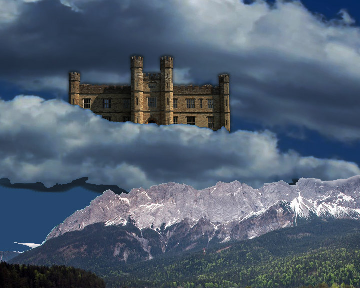
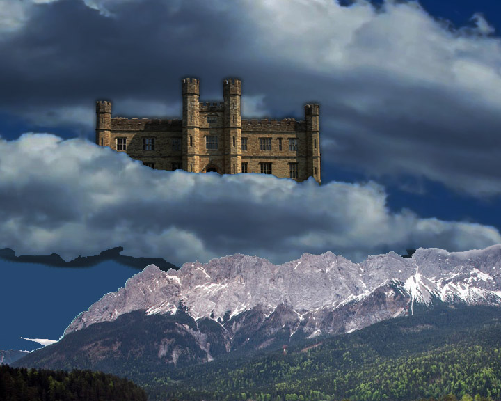

Hi, my name is Kevin Rubacha. Welcome to my resume! I am 19 years old and I am currently a college student at Seminole State College. I love to design and create things. My current major is Digital Media. In my free time, I love to play video games and watch wrestling.


 
